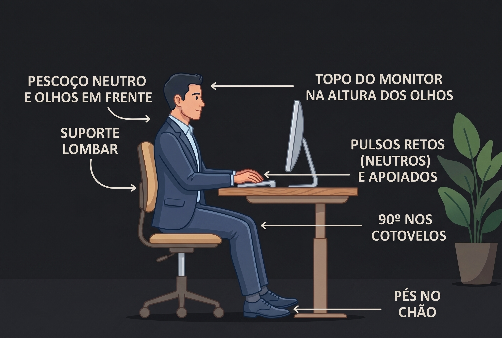

Iniciando câmera...
Aligna
Processamento 100% no seu navegador via GPU
Monitor de Postura & Fadiga Ocular
Iniciando...
Calibrar Distância Ideal (Foto)
Ver Histórico de Piscadas
Modo Flutuante (PiP)
Distância base: Não definida
EAR: -- | Distância: --
v1.0.2
Histórico de Piscadas (PPM)
×